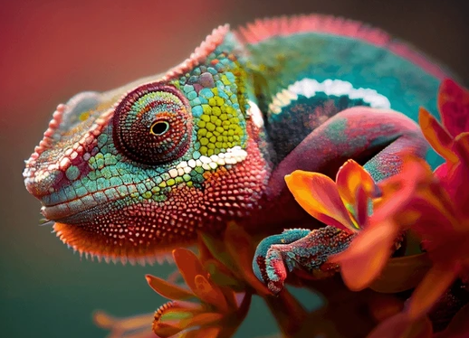
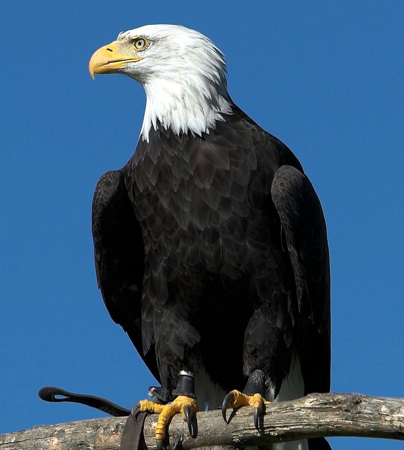

Bukelamun
Bukalemunlar, uzun dilleri, renk değiştirme yetenekleri ve gözlerinin bağımsız hareket edebilmesiyle tanınan tropikal bölgelerde yaşayan sürüngenlerdir

Kartal
Kartallar, keskin gagaları, güçlü pençeleri ve büyük kanat açıklıkları ile bilinen büyük etobur kuşlardır.

Kutup Ayısı
Kutup ayıları, beyaz renkli kalın kürkleri ve buzullarda yaşamalarıyla tanınan büyük etobur memelilerdir.

Köpek Balığı
Köpek balıkları, hidrodinamik vücut yapıları, keskin dişleri ve kıkırdak yapılı iskeletleri ile tanınan denizlerin etobur avcılarıdır

Zürafa
Zürafalar, uzun boyunları, lekeli kürkleri ve yüksek ağaçlardaki yaprakları yiyerek beslenmeleriyle tanınan büyük otçul memelilerdir.